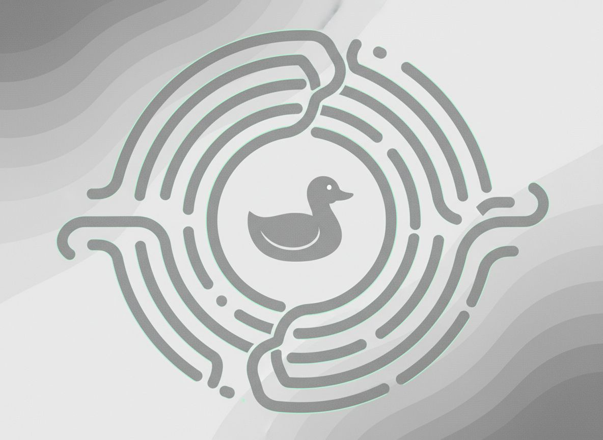
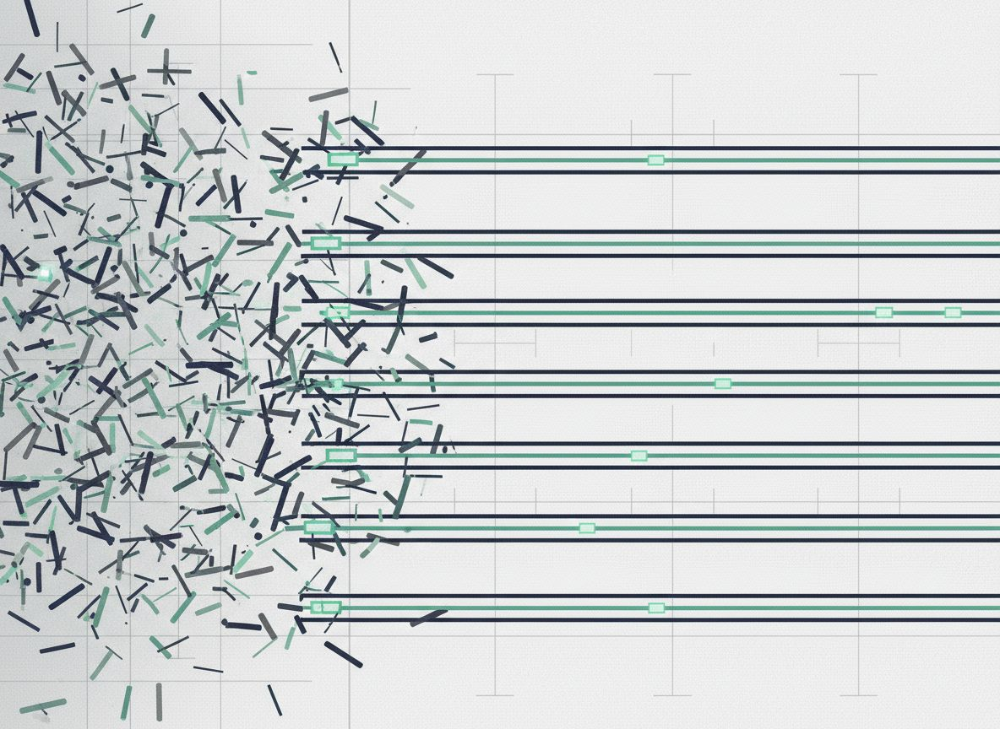
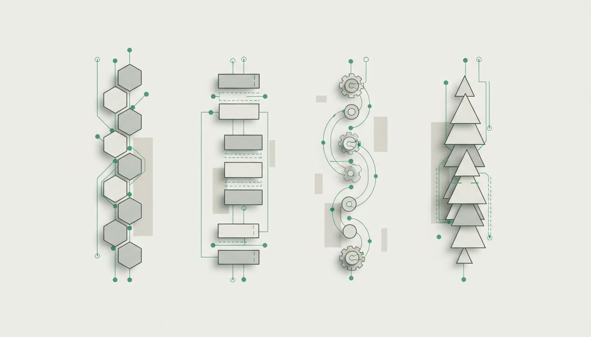

Debug faster with an AI duck that thinks in steps
Explain the bug out loud, get a structured debugging path, and stop losing time in loops of vague guesses.
No install. Start debugging in 30 seconds.

workflow
How it works
A short path from confusion to the next useful debugging action.
Describe problem
Write what is broken, when it happens, and what you already checked.

Talk to duck assistant
The assistant asks clarifying questions and keeps the debugging thread focused.

Get structured debugging path
Receive clear next steps, likely branches, and a practical order of investigation.
features
Built for real debugging work
Practical outputs for developers who need clarity, not motivational noise.
Structured debugging paths
Turn vague bug reports into reproducible, ordered next steps you can follow without losing context.
Conversation-first diagnosis
Talk through the issue with a debugging assistant that keeps your assumptions, signals, and dead ends organized.
Fast root-cause isolation
Narrow scope quickly by separating symptoms, environment changes, and likely failure points.
Terminal-native atmosphere
Built for developers who think in traces, commands, logs, and compact actionable output.
Useful team handoff
Share a clear debugging path instead of a scattered thread of guesses and screenshots.
Zero setup start
No install, no local configuration, and no onboarding maze before your first debugging session.
roadmap
Public roadmap
Clear product direction with explicit milestones and status tags.
MCP server
Connect the assistant to richer developer workflows and external tooling.
Skins
Theme packs and visual personalization for your debugging workspace.
Battlepass
Progression mechanics for debugging sessions, streaks, and milestones.
Lootboxes
Experimental unlockables for playful engagement without blocking core utility.

faq
Questions developers ask before they try it
Short answers for common objections, setup worries, and workflow questions.
ready
Explain the bug. Follow the path. Ship the fix.
Built for developers who want a calm debugging assistant instead of more noise.
contacts
Need a custom rollout or have product questions?
Send a note and we will reply with the best next step for your team, workflow, or partnership.